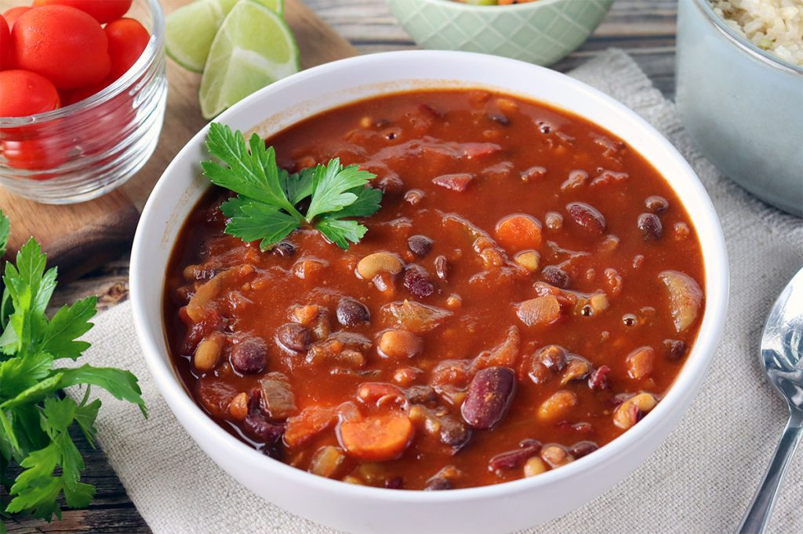
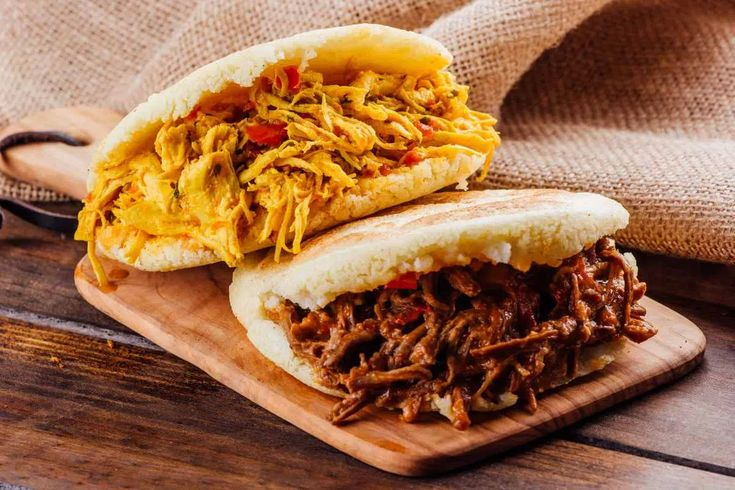
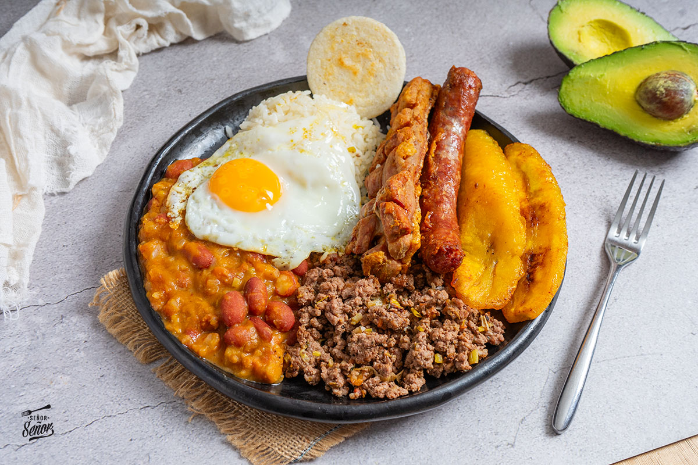

Volver a Recetas
Colombiana
Listado de recetas colombianas. Use Tab y Shift+Tab para navegar por las tarjetas. Presione Enter para abrir la receta.
-
Ver receta
Arroz con pollo
Clásico plato de arroz sazonado con pollo desmenuzado, verduras y especias.
-

Empanadas
Crujientes empanadas rellenas de carne, papa y especias, fritas al punto perfecto.
-

Frijoles
Tradicional sopa espesa de frijoles cocidos con verduras y sabores caseros.
-

Sancocho
Reconfortante sopa con carnes, yuca, papa, maíz y hierbas tradicionales.
-

Arepas rellenas
Suaves arepas rellenas con carnes jugosas y sabores auténticos.
-

Bandeja paisa
Abundante plato típico con arroz, frijoles, carne, chorizo, huevo y plátano.